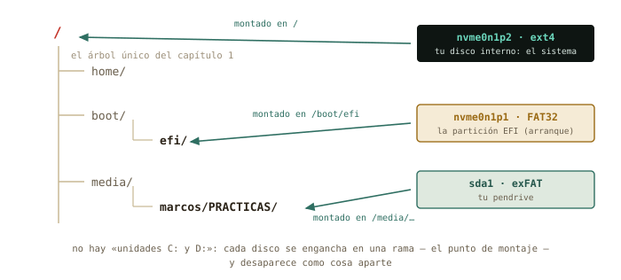
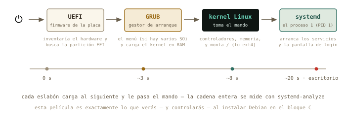
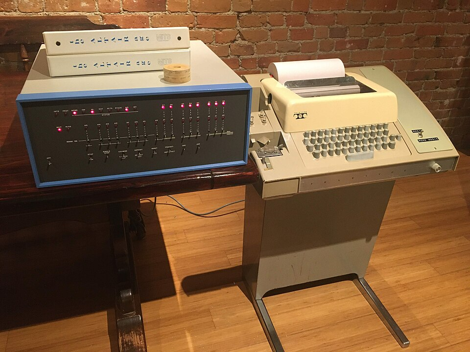

6 Discos, particiones y arranque
Última sesión del bloque B, y la que abre la puerta de todo lo que viene: entender dónde viven físicamente tus ficheros — discos, particiones, sistemas de ficheros — y qué pasa exactamente entre el botón de encendido y tu escritorio. Hoy no se toca nada: se aprende a leer el quirófano. Operar — particionar, formatear, instalar — será en la máquina virtual del bloque C, donde equivocarse es gratis.
Al terminar esta sesión sabrás
- Leer el mapa de tus discos y particiones con
lsblk, e identificar cada pieza. - Qué es un sistema de ficheros, y quién es quién: ext4, FAT32, NTFS, exFAT.
- Qué significa montar: cómo los discos se enganchan al árbol único — y por qué «expulsar con seguridad» no es un ritual supersticioso.
- Vigilar el espacio con
dfy encontrar qué lo devora condu. - La película completa del arranque: UEFI → GRUB → kernel → systemd, y medirla en tu máquina.
- Qué es la partición EFI que te encontrarás al instalar Debian.
6.1 El mapa de tus discos: lsblk
Los discos son dispositivos de bloque: almacenes que leen y escriben en bloques de bytes. Como todo en Linux, aparecen disfrazados de fichero en /dev — nvme0n1 si tu disco es NVMe moderno, sda si es SATA — y sus particiones, las divisiones que un mismo disco puede tener, se numeran detrás: nvme0n1p1, nvme0n1p2… El plano completo lo dibuja lsblk (list block devices):
marcos@portatil:~$ lsblk
NAME MAJ:MIN RM SIZE RO TYPE MOUNTPOINTS
nvme0n1 259:0 0 476,9G 0 disk
├─nvme0n1p1 259:1 0 512M 0 part /boot/efi
└─nvme0n1p2 259:2 0 476,4G 0 part /Léelo como un físico lee un diagrama: un disco de 477 GB con dos particiones — una pequeñita de 512 MB montada en /boot/efi (enseguida sabrás quién es), y el resto montado en /: ahí vive todo tu sistema y tu casa. Tu máquina puede variar — más particiones, un sda — pero la gramática es esta.
6.2 Sistemas de ficheros: el orden dentro del bloque
Un disco recién salido de fábrica es solo una pizarra de bloques vacíos. Para que haya ficheros — con nombres, carpetas, permisos, fechas — hace falta imponerle una estructura: el sistema de ficheros. Formatear una partición es exactamente eso: estrenar su estructura (borrando lo anterior, de ahí el respeto).
| Sistema | Dónde lo verás | Lo esencial |
|---|---|---|
| ext4 | tu /, todo Linux |
robusto, con permisos y dueños (cap. 4) |
| FAT32 | la partición EFI, pendrives viejos | antiguo y universal; sin permisos, ficheros de 4 GB máximo |
| exFAT | pendrives y tarjetas SD modernas | el FAT sin límite de tamaño; ideal para compartir |
| NTFS | discos con Windows | el de Windows; Linux lo lee y escribe sin drama |
La tabla explica media convivencia con Windows: un pendrive exFAT lo leen ambos mundos; tu ext4, Windows ni lo ve. Y fíjate en el detalle del capítulo 4: los permisos rwx son una prestación del sistema de ficheros — por eso un pendrive FAT no los tiene, y todo aparece como rwxrwxrwx cuando lo montas.
✚ Truco · El mapa con ratón: «Discos» y GParted
Todo lo que lsblk te cuenta en texto lo dibujan dos aplicaciones gráficas que conviene conocer por su nombre, porque las verás en cualquier foro. Discos (menú → Accesorios; gnome-disks) viene con Mint: enseña cada disco con sus particiones como una barra de colores, monta y desmonta con un botón, formatea un pendrive y edita las opciones de montaje (anexo E). GParted (sudo apt install gparted, y viene de serie en el pendrive live de Mint) es el editor de particiones: crea, borra, redimensiona y mueve particiones — es la herramienta con la que se le hace sitio a Linux junto a Windows, y su hermano de texto es lo que usarás en el instalador del capítulo 8. Hoy, por la regla del curso, las abres solo para mirar: GParted sobre tu disco real es tan destructivo como potente. Para tocar, la máquina virtual del bloque C o un pendrive que puedas borrar.
6.3 Montar: enganchar discos al árbol
Y aquí se cierra por fin el círculo abierto el primer día, cuando te dijimos «no hay unidades C: y D:». En Linux, un disco no aparece como una isla con su letra: se monta — se engancha — en un directorio del árbol único, su punto de montaje, y desde ese momento su contenido es esa rama.

lsblk es exactamente esto.
Cuando pinchas un pendrive, Mint lo monta solo en /media/tu_usuario/NOMBRE y te abre la ventana — cómodo y correcto. La versión manual es mount (montar) y umount (desmontar; sí, sin la primera n), y la usarás en el servidor sin escritorio. Hoy te basta con saber leerlo — montar a mano discos de otros formatos, hacerlo permanente y enganchar carpetas de otras máquinas es el anexo E, para cuando hayas visto SSH:
marcos@portatil:~$ lsblk
NAME MAJ:MIN RM SIZE RO TYPE MOUNTPOINTS
sda 8:0 1 28,9G 0 disk
└─sda1 8:1 1 28,9G 0 part /media/marcos/PRACTICAS
nvme0n1 259:0 0 476,9G 0 disk
...◉ Por dentro · Por qué «expulsar» no es superstición
Escribir en disco es lento, así que el sistema hace trampa legal: apunta tus cambios en RAM — la caché — y los vuelca al dispositivo cuando le conviene. Si arrancas el pendrive del puerto justo después de copiar, puede que parte siga en la caché: fichero corrupto. «Expulsar con seguridad» (o umount) significa «vuelca todo lo pendiente y cierra». Es un compromiso físico clásico: velocidad a cambio de un protocolo de salida. Respétalo como respetas la rampa de frenado de la centrífuga.
6.4 ¿Cuánto espacio queda? df y du
Dos preguntas distintas, dos herramientas. df (disk free) responde «¿cómo van de llenos mis sistemas de ficheros?»:
marcos@portatil:~$ df -h /
S.ficheros Tamaño Usados Disp Uso% Montado en
/dev/nvme0n1p2 468G 187G 258G 43% /Y du (disk usage) responde «¿cuánto ocupa esto?» — y combinado con las tuberías del capítulo 3, «¿quién me está llenando el disco?»:
marcos@portatil:~$ du -sh ~/* 2> /dev/null | sort -h | tail -3
2,1G /home/marcos/Descargas
8,7G /home/marcos/simulaciones
64G /home/marcos/Vídeos-s resume cada carpeta en una línea, -h en unidades humanas, y sort -h — fíjate — sabe ordenar esas unidades humanas (sabe que 8,7G > 900M). El 2> /dev/null es el silenciador de quejas del capítulo 4. Culpable localizado en una línea.
✚ Truco · El mismo censo, con gráfica de quesitos
Mint trae el Analizador de uso de disco (menú → Accesorios): el mismo du con anillos de colores clicables — francamente bueno para explorar. Y en la terminal existe su equivalente interactivo, ncdu (un apt install de distancia), que es lo que usarás en el servidor. Tres herramientas, una idea.
6.5 La partición EFI y el arranque
Queda explicar aquella partición enana de 512 MB. Para eso, la pregunta que este curso te prometió responder: ¿qué pasa cuando pulsas el botón de encendido?

- UEFI — el firmware grabado en la placa base — despierta, inventaría el hardware, y busca un disco que tenga partición EFI: una partición FAT32 con cargadores de arranque dentro. Ahí está el misterio resuelto:
nvme0n1p1es el buzón estándar donde los sistemas operativos dejan su llave de arranque. - GRUB, el cargador que Linux dejó en ese buzón, toma el relevo: si tienes varios sistemas te enseña el menú, y carga el kernel en memoria.
- El kernel toma el mando de verdad: controladores, memoria, procesos — y monta tu ext4 en
/. - El kernel lanza el primer proceso, systemd — mira su PID:
ps -p 1— que arranca en cascada los servicios y, al final, tu pantalla de entrada.
Y como todo en esta casa, la película se puede medir:
marcos@portatil:~$ systemd-analyze
Startup finished in 4.211s (firmware) + 2.108s (loader) + 3.998s (kernel) + 8.870s (userspace) = 19.188sAhí están los cuatro actos con sus tiempos. Cuando instales Debian en el bloque C vas a construir esta cadena — elegir la partición EFI, ver a GRUB instalarse — y cuando algo no arranque (a todos nos pasa), sabrás en qué eslabón se rompió.
◷ Historia · Levantarse tirando de los cordones
«Arrancar» en inglés es to boot, de bootstrapping: levantarse en el aire tirando de los cordones de las propias botas. El chiste es exacto: para cargar un programa hace falta un programa ya cargado — ¿y el primero? En los ordenadores de los 70, como el Altair 8800, el problema lo resolvía un humano: metía a mano el cargador inicial, byte a byte, con los interruptores del panel frontal, para que ese programita minúsculo pudiera cargar el siguiente desde la cinta. Tu UEFI es ese operador, fosilizado en la placa base: la cadena entera — firmware que carga al cargador que carga al kernel — sigue siendo la misma idea, medio siglo después.

6.6 Práctica: inspección del quirófano
Cuaderno en marcha (script sesion06.log). Todo lo de hoy es lectura: ningún comando cambia nada en tu disco.
Ejercicio 6.1 · Tu mapa
Dibuja en tu cuaderno (en texto, como el ejemplo del capítulo) el mapa completo que da lsblk de tu máquina: discos, particiones, tamaños y puntos de montaje. Identifica: ¿cuál es tu partición EFI? ¿Dónde está montado tu sistema?
lsblk — la EFI es la pequeña (unos cientos de MB) montada en /boot/efi; el sistema, la grande montada en /. Si ves una tercera de tipo swap, es el «desahogo» de la RAM (en los Mint recientes esa función la hace un fichero, /swapfile, y no verás partición).
Por qué así — Este mapa es el que te pedirá el instalador de Debian en el capítulo 8. Dibujarlo de tu propia máquina hoy — con calma y sin riesgo — es el ensayo de leerlo allí, donde las decisiones cuentan.
Ejercicio 6.2 · Parte de capacidad
¿A qué porcentaje de llenado está tu disco? ¿Cuánto espacio libre te queda en números absolutos? Una línea de df.
df -h / — las columnas Usados, Disp y Uso% responden todo. (Un df -h a secas lista además los pseudo-sistemas en RAM tipo tmpfs: ignóralos hoy sin remordimiento.)
Por qué así — El hábito del df -h antes de una descarga o simulación grande evita el clásico «disco lleno al 99 % de la ejecución». En los clústeres, además, el espacio suele tener cuota: esta lectura será rutina.
Ejercicio 6.3 · ¿Quién llena tu casa?
Con du, las tuberías y sort -h: obtén el top 5 de carpetas más pesadas de tu home. ¿Te sorprende el resultado?
du -sh ~/* 2> /dev/null | sort -h | tail -5. Para incluir también las ocultas del capítulo 4: du -sh ~/.[a-z]* 2> /dev/null | sort -h | tail -5 — no es raro que ~/.cache o un ~/miniconda3 den la sorpresa.
Por qué así — du mide, sort -h ordena magnitudes humanas, y la tubería los compone: el capítulo 3 aplicado a la administración. El silenciador 2> evita el ruido de carpetas sin permiso de lectura.
Ejercicio 6.4 · El pendrive (si tienes uno a mano)
Conéctalo. Con lsblk, localiza: qué nombre de dispositivo recibió, qué sistema de ficheros trae (lsblk -f lo muestra) y dónde se montó. Copia cualquier fichero dentro, y desmóntalo desde la terminal con umount /media/tu_usuario/NOMBRE. Verifica con lsblk que el punto de montaje desapareció antes de extraerlo.
Aparecerá como sda1 (o sdb1), típicamente vfat o exfat, montado en /media/marcos/NOMBRE. Tras umount, su columna MOUNTPOINTS queda vacía: la caché se ha volcado y es seguro extraer. Si umount protesta con «objetivo ocupado», algo lo está usando — casi siempre una terminal con cd dentro del pendrive o la ventana del gestor de archivos abierta ahí.
Por qué así — Es el ciclo completo de la sección de montaje, con el matiz del «ocupado» incluido, que te encontrarás seguro. El botón de expulsar del escritorio hace exactamente este umount — dos caras, un mecanismo.
Ejercicio 6.5 · Cronometrar el arranque
¿Cuánto tardó tu último arranque, y qué acto de la película fue el más lento? Después: ¿qué servicio concreto tardó más? (systemd-analyze blame da el ranking; quédate con el top 3.)
systemd-analyze desglosa firmware, cargador, kernel y userspace — lo normal es que gane userspace. Y systemd-analyze blame | head -3 señala a los servicios lentos (a menudo NetworkManager esperando red, o algún escaneo de disco).
Por qué así — «No arranca» o «tarda muchísimo» dejan de ser misterios cuando el proceso se puede medir por actos y por actores. Es instrumentación pura: la misma mentalidad del laboratorio aplicada a la máquina. PID 1, por cierto: compruébalo con ps -p 1.
Ejercicio 6.6 · El buzón de las llaves
Asómate (solo lectura) a la partición EFI: sudo ls /boot/efi/EFI. ¿Qué carpetas hay? ¿Reconoces quién dejó cada llave de arranque?
Típicamente ubuntu (la llave de tu Mint — hereda el nombre de su familia, capítulo 5) y BOOT (el cargador de respaldo estándar). Si tu máquina convivió con Windows, verás también Microsoft: los dos sistemas, sus dos llaves, el mismo buzón FAT32.
Por qué así — Ver el buzón con tus ojos desmitifica el arranque dual: no hay magia, hay una carpeta con cargadores y un firmware que elige. Y el sudo — capítulo 4 — es porque el buzón del arranque no es zona de paseo. Cierra el cuaderno: exit. Bloque B completo: seis sesiones, seis logs.
6.7 Autocomprobación
Marca una respuesta por pregunta; la corrección es inmediata.
En lsblk, nvme0n1p2 es…
nvme0n1, partición p2. Los pendrives suelen aparecer como sda1, sdb1…p2 final es «partición 2»; el disco es la parte nvme0n1. Revisa el mapa de lsblk.Formatear una partición significa…
Montar un disco es…
¿Por qué «expulsar con seguridad» un pendrive?
umount) fuerza el volcado y cierra. Sin eso, ficheros a medias.La partición EFI es…
/boot/efi/EFI viste las llaves de cada sistema instalado./boot/efi. El kernel en ejecución vive en RAM.El orden correcto del arranque es…
systemd-analyze los cronometra.Autocomprobación (test de la sección 6.8) — Respuestas: 1 b · 2 b · 3 a · 4 b · 5 a · 6 b.
La próxima sesión
Empieza el bloque C, y por fin está permitido romper cosas. En el capítulo 7 creas tu primera máquina virtual con el taller que Linux trae de serie — KVM y virt-manager: CPU, RAM, disco y red de mentira dentro de tu máquina de verdad — y conoces el superpoder que lo cambia todo: las instantáneas, el «deshacer» que la vida real no tiene. Es el laboratorio de riesgo cero donde harás la instalación del capítulo 8 y los experimentos de red de los bloques D y E. Guarda sesion06.log.
cap. 6 v0.1 · piloto — anota tiempo real invertido, dudas y erratas junto a tu sesion06.log